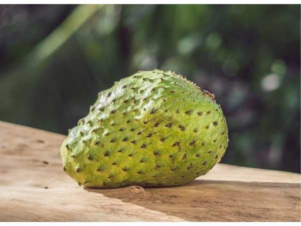

Annona muricata
Common Names: Soursop, Graviola, Guanábana, Prickly Custard Apple
Local Name: Mullu Seetha (Tamil), Laxman Phal (Hindi), Hanuman Phal (Marathi)
Family: Annonaceae
Origin: Tropical regions of the Americas (Caribbean, Central and South America)
Plant Type: Perennial evergreen tree
Variety: Soursop — spiny-skinned, white-fleshed custard apple
Average Lifespan: 15–30 years
| Growth Habit | Small to medium evergreen tree with low-branching, spreading canopy |
| Plant Size | 5–10 meters tall; canopy spread 4–6 meters |
| Leaves | Alternate, oblong-elliptic, 6–18 cm long, glossy dark green above, lighter beneath; aromatic when crushed |
| Flowers | Large, solitary, yellowish-green, 3–5 cm; thick fleshy petals in two whorls of three |
| Flower Characteristics | Cauliflorous (borne on trunk and older branches); protogynous, requiring hand pollination in many regions |
| Fruit | Large, irregular heart-shaped, 15–30 cm long, 1–5 kg; covered with soft curved spines |
| Fruit Color | Dark green skin turning slightly yellowish-green when ripe; white creamy pulp inside |
| Seed Characteristics | Numerous smooth, hard, black seeds (0.5–1.5 cm) embedded in pulp; toxic if ingested in large quantities |
| Root System | Shallow, spreading root system; sensitive to waterlogging |
| Climate | Tropical lowland; warm and humid; frost-intolerant |
| Temperature Range | 25–30°C ideal; growth slows below 15°C; damaged below 5°C |
| Rainfall Requirement | 1500–2500 mm annually; well-distributed throughout the year |
| Soil Type | Deep, well-drained sandy loam to clay loam rich in organic matter |
| Soil pH Preference | 5.5–6.5 |
| Sun Requirement | Full sun to partial shade (6+ hours daily) |
| Spacing | 5–6 meters between trees |
| Irrigation Method | Drip or basin irrigation; consistent moisture essential |
| Water Requirement | High; does not tolerate prolonged drought |
| Can it Grow in Pots? | Yes, in large containers (40+ liters); will remain smaller |
| Fertilizer Schedule | Every 3 months; increase during fruiting season |
| Recommended Organic Fertilizers | Well-rotted FYM, vermicompost, bone meal, fish emulsion |
| Pesticide Frequency | Monitor monthly; treat as needed |
| Recommended Organic Pesticides | Neem oil, pyrethrin, insecticidal soap |
| Mulching Practice | Thick organic mulch (8–10 cm) to retain moisture and suppress weeds |
| Training System | Open center system; maintain low branching for easy harvest |
| Pruning Time | After harvest; remove dead and crossing branches |
| How to Prune | Light annual pruning to maintain shape; remove suckers and water sprouts |
| Common Pests | Mealybugs, scale insects, fruit borers, annona seed borer, aphids |
| Common Diseases | Anthracnose, root rot (Phytophthora), pink disease, leaf spot |
| Disease Prevention & Remedies | Good drainage, avoid overhead irrigation, copper-based fungicides, remove infected fruit |
| Flowering Months | Year-round in tropical climates; peak during warm wet season |
| Fruiting Season | Fruits available most of the year; peak June–September |
| Days to Harvest | 150–180 days from flowering |
| Harvest Indicators | Fruit spines spread apart, skin turns matte yellowish-green, slight softness when pressed |
| Average Yield per Plant | 20–50 fruits per tree per year (mature tree) |
| Pollination Type | Cross-pollination; protogynous flowers |
| Pollination Notes | Natural pollinators (nitidulid beetles) often scarce; hand pollination significantly improves fruit set |
| Pollination Details | Flowers are protogynous — female stage first, then male; hand pollination recommended for reliable yields |
| Propagation by Seeds | Seeds germinate in 15–30 days; seedlings fruit in 3–5 years |
| Propagation by Cuttings | Difficult; air layering possible but not common |
| Propagation by Grafting | Veneer or cleft grafting onto Annona rootstock for earlier fruiting and uniformity |
| Water Usage | Moderate to high; efficient with mulching and drip irrigation |
| Soil Conservation Practices | Mulching and cover crops beneath trees |
| Organic Practices Used | Compost, panchagavya, biological pest control |
| Companion Plants | Leguminous cover crops, banana (as windbreak), turmeric |
| Biodiversity Benefits | Provides shade and habitat; flowers attract beetles and other pollinators |
| Commercial Production Regions | Mexico, Brazil, Colombia, Venezuela, India, Philippines, Indonesia |
| Market Uses | Fresh fruit, juice, pulp, traditional medicine |
| Processing Uses | Juice, smoothies, ice cream, candies, herbal supplements |
| Market Value (Approx.) | ₹100–300 per kg (India); high demand for medicinal use |
| Symbolism | Associated with healing and traditional medicine across tropical cultures |
| Traditional Uses | Leaves brewed as tea for calming; fruit pulp used in folk remedies; bark and roots in traditional medicine |
| Calories | 66 kcal per 100g |
| Dietary Fiber | 3.3 g per 100g |
| Vitamin C | 20.6 mg per 100g (34% DV) |
| Vitamin A | 2 IU per 100g |
| Iron | 0.6 mg per 100g |
| Potassium | 278 mg per 100g |
| Antioxidants | Rich in acetogenins, alkaloids, phenols, and flavonoids |
| Other Key Nutrients | Thiamine, riboflavin, niacin, magnesium, phosphorus |
| Anxiety & Sleep | Leaf tea traditionally used as a calming agent and sleep aid |
| Immune Support | Vitamin C and antioxidant content supports immune function |
| Anti-inflammatory Properties | Leaf and fruit extracts show anti-inflammatory activity in studies |
| Heart Health | Potassium helps regulate blood pressure; antioxidants support vascular health |
| Digestive Health | Fiber aids digestion; traditionally used to treat stomach ailments |
Disclaimer: Information provided is for educational purposes only and not a substitute for medical advice.
Add your field observations here.